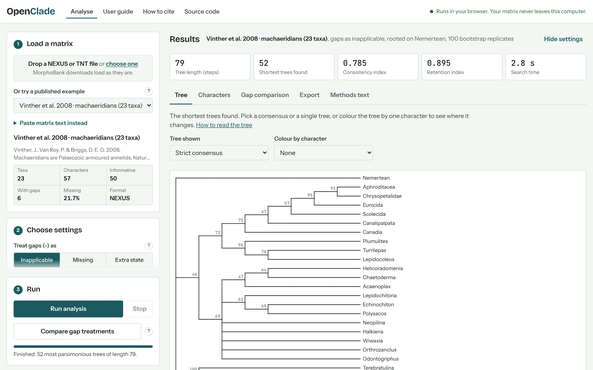
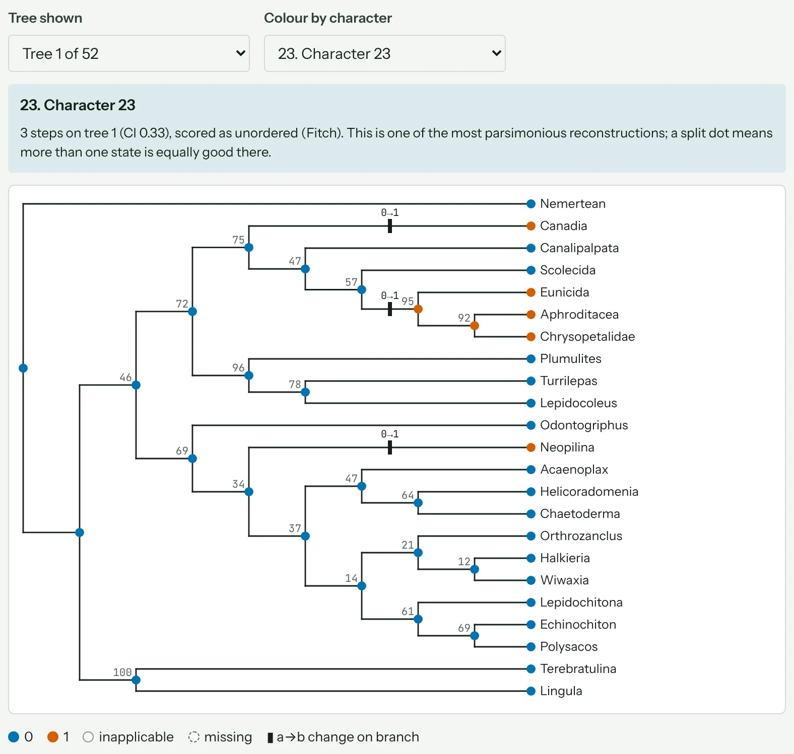
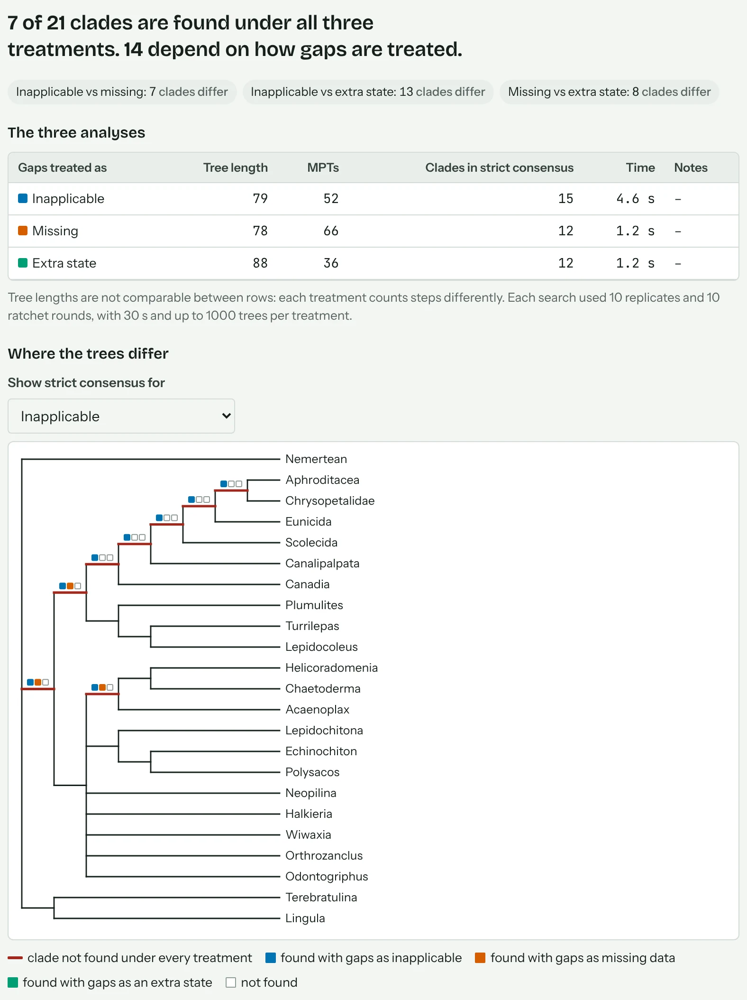

User guide
OpenClade finds the most parsimonious trees for a morphological character matrix, in your browser. This guide covers each step, from loading a matrix to writing up the results.
On this page
Quick start


- Load a matrix. Drop a NEXUS or TNT file onto step 1, or choose a published example to try things out. Matrices downloaded from MorphoBank load as they are.
- Check the summary. Step 1 then shows the number of taxa and characters, and warns about anything odd in the file, such as a row with too few characters.
- Choose settings. The defaults suit a first look: gaps as inapplicable, a Standard search and 100 bootstrap replicates. Choose the taxon to root the tree on.
- Press Run analysis. Results appear on the right as soon as the search finishes. The tabs show the tree, per-character statistics, a gap comparison, exports and a methods paragraph.
Your matrix stays on your computer. The page reads the file in the browser and runs the analysis there; nothing is uploaded. Nothing is saved either, so download what you need before you close the tab.
Before you publish
- Run a Thorough search with a longer time limit: 600 seconds or more for 50 or more taxa.
- Run it again with a different random seed. If both runs find the same shortest length, the search has probably found the optimum.
- Raise Trees to keep until the number of shortest trees found is below the limit, so the strict consensus includes every tree.
- Use 1000 bootstrap or jackknife replicates.
- If your matrix has gaps, use Compare gap treatments and report the result.
- Cite OpenClade and the methods it uses (see How to cite).
Preparing your matrix
OpenClade reads two formats.
- NEXUS (
.nex,.nexus,.nxs) - A DATA or CHARACTERS block with a MATRIX command, as written by MorphoBank, Mesquite and PAUP*. Interleaved matrices, quoted taxon names, a TAXA block, and character and state names (CHARSTATELABELS, CHARLABELS, STATELABELS) are all read. Names then appear in the Characters tab and when you colour the tree by a character.
- TNT (
.tnt,.ss) - An
xreadcommand, including matrices split into blocks with&.
You can also paste matrix text into step 1 with Paste matrix text instead.
How cells are read
| In the file | Meaning | How OpenClade treats it |
|---|---|---|
0–9, letters | A character state | One state. Up to 30 states per matrix. Letters are not case-sensitive unless the FORMAT command says RESPECTCASE. |
? | Missing data: the state exists but is unknown | Could be any state. |
- | Gap: the character does not apply to this taxon | Depends on the gap treatment you choose; see the next section. |
(01) or {01} in NEXUS, [01] in TNT | Polymorphic or uncertain | The taxon may have any of the listed states. |
Character settings are not applied. OpenClade treats every character as unordered, equally weighted and included. Ordered characters, weights and excluded characters (in an ASSUMPTIONS block, or ccode in TNT) are ignored, and step 1 shows a warning when a file contains them. If the original analysis ordered or excluded characters, your tree lengths will differ from it.
The data summary
- Taxa and characters
- The rows and columns of the matrix.
- Informative
- Characters with at least two states that each occur in two or more taxa. Only these can make one tree shorter than another.
- With gaps
- Characters that contain at least one gap (
-). - Missing
- The share of all cells scored
?. - Polymorphic
- Cells with more than one state. Shown instead of the file format when there are any.
Warnings and what to do
| Message | What to do |
|---|---|
| Rows with the wrong number of characters | A row is too long or too short. Common causes are a missing cell, a stray character, or a polymorphism written without brackets. Fix the rows named in the message. |
| Header says N taxa but M rows were read | NTAX in DIMENSIONS does not match the matrix. Often a taxon name with spaces is not in quotes, so it is read as two rows. |
| Symbols not declared in FORMAT SYMBOLS | The matrix uses a state the header does not list. OpenClade adds it; check that it is not a typing error. |
| Duplicate taxon name | Two rows share a name. Rename one: trees identify tips by name. |
| Taxon has no scored characters | Every cell is ? or -, so the taxon can sit anywhere in the tree. Consider removing it. |
| This file sets ordered characters, weights or excluded characters | See the note above. The analysis runs with all characters unordered and equally weighted. |
Gaps and inapplicable characters
In a morphological matrix, a gap (-) usually means that a character does not apply. An animal without a tail has no tail colour. A ? means something different: the state exists, but nobody knows it. How gaps are counted can change which tree is shortest, so OpenClade lets you choose.
- Inapplicable (the default)
- Uses the algorithm of Brazeau, Guillerme & Smith (2019), as in the TreeSearch package for R. Tail colour is counted only where tails exist, and a red tail that evolves twice counts as two origins of red. Following TreeSearch, the algorithm is used for characters with three or more gaps; in characters with one or two gaps, gaps are read as missing.
- Missing
- Gaps are read as
?, as in the default settings of TNT and PAUP*. A tailless ancestor can be given any tail colour, so a colour that appears twice can cost nothing. - Extra state
- A gap is one more state, like
0or1. Gaining or losing a tail is then counted twice: once in the tail character and again in tail colour.
A worked example
Seven animals are scored for three characters. Tail colour is inapplicable (-) in the three animals without a tail.
| Taxon | Tail | Tail colour | Stripes | As coded |
|---|---|---|---|---|
| Outgroup | absent | – | absent | 0 - 0 |
| A, B | present | red | absent | 1 1 0 |
| C, D | absent | – | present | 0 - 1 |
| E, F | present | red | present | 1 1 1 |
Tree X
One red tail, inherited by A, B, E and F. Stripes appear twice.
Tree Y
Stripes appear once, but the red tail evolves twice: in A and B, and again in E and F.
| Gaps treated as | Tree X | Tree Y | Shorter tree |
|---|---|---|---|
| Inapplicable | 3 | 4 | X |
| Missing | 3 | 3 | Neither: a tie |
| Extra state | 4 | 5 | X |
Which should I use?
Use inapplicable when your gaps mean "does not apply". That is the usual case when a matrix scores the presence of a structure in one character and its features in others. Use missing to repeat an analysis that was run in TNT or PAUP* with default settings. Report the treatment in your methods. Reviewers may ask how much it matters, and Compare gap treatments answers that in one run.
Rooting the tree
The length of a tree does not depend on where it is rooted. So the outgroup does not change which trees are shortest; it changes how they are drawn, and which groups count as clades in the consensus trees and support values.
Choose a taxon outside the group you are studying under Root the tree on (outgroup). OpenClade roots on a single taxon. If you have several outgroup taxa, root on the one most distant from your ingroup and check that the others group as you expect.
Search settings
There are too many trees to check them all: more than 1020 for 20 taxa. Like TNT and PAUP*, OpenClade searches heuristically, in this order:
- Build a starting tree by adding taxa in a random order (a random addition sequence).
- Rearrange branches, first by SPR and then by TBR, for as long as that makes the tree shorter.
- Escape local optima with the parsimony ratchet (Nixon 1999): give a random quarter of the characters double weight, search, restore the weights and search again.
- Repeat steps 1 to 3 several times (replicates), split across your CPU cores, then combine the best trees by tree fusing (Goloboff 1999).
- Collect every equally short tree that TBR can reach from the best trees.
Search effort
| Setting | Replicates | Ratchet rounds each | Use for |
|---|---|---|---|
| Quick | 3 | 5 | A first look, or checking that a matrix loads correctly |
| Standard | 10 | 10 | Most matrices |
| Thorough | 25 | 25 | Final analyses; raise the time limit as well |
More settings
- Trees to keep (default 100, up to 1000)
- The search stops collecting equally short trees at this number. The consensus trees summarise only the trees kept, so if the result says "100+", more trees exist and the strict consensus may look better resolved than it really is. Raise the limit for a final analysis.
- Time limit (default 120 seconds)
- The search stops at the limit and reports the best trees so far, with a note that the limit was reached. Branch support then gets the same amount of time again.
- Random seed
- The same seed, settings and number of cores give the same result every time. Change the seed to check that the search is not stuck.
- CPU cores
- Replicates are split between this many parallel workers. On computers with four or more cores the default leaves one free, up to a maximum of 8.
Did the search find the shortest trees?
No heuristic search can guarantee it. Good signs are that two runs with different seeds find the same length, and that the time limit was not reached. If runs disagree, use Thorough with a longer time limit. Matrices of 50 to 90 taxa with many gaps can need several minutes. OpenClade is slower than TNT on large matrices, so for very large ones it is worth checking the result in TNT or TreeSearch.
Branch support
- Bootstrap (Felsenstein 1985)
- Each replicate draws characters at random, with replacement, until it has as many as the matrix.
- Jackknife (Farris et al. 1996)
- Each replicate deletes each character with probability e−1, about 37%.
The number on a node is the percentage of replicates in which that clade was found; "<5" means fewer than 5%. Each replicate runs a fast search (one random addition tree improved by SPR), so values can be a little lower than with a full search in every replicate. Use 100 replicates to explore and 1000 for a paper.
Reading the results
The summary numbers
- Tree length (steps)
- The number of character-state changes on the shortest trees found. Only comparable between analyses of the same matrix with the same gap treatment.
- Shortest trees found
- How many distinct, equally short trees (most parsimonious trees, MPTs) were found. A "+" means the limit on trees to keep was reached.
- Consistency index (CI) and retention index (RI)
- How well the characters fit the tree, from 0 to 1, where 1 means no homoplasy. They are calculated over the characters scored with ordinary (Fitch) parsimony. Characters handled by the inapplicable algorithm are left out, because the usual minimum and maximum numbers of steps do not apply to them.
- Search time
- How long the tree search took, not counting branch support.
The tree
Tree shown switches between the strict consensus (clades found in every shortest tree), the majority-rule consensus (clades in more than half of them, labelled with that percentage) and each single tree. When branch support was run, its values label the nodes.
Colour by character shows how one character changes on a single tree. If a consensus is showing, the view switches to tree 1.

The Characters tab
One row per character: the steps it needs on tree 1, its consistency index (CI) and retention index (RI), and the algorithm used to score it. A character with many steps and a low CI changes back and forth on the tree. That can be real homoplasy, but it is also worth checking how the character was scored. Click a row to colour the tree by that character.
Comparing gap treatments
Press Compare gap treatments in step 3. OpenClade runs the same search three times, once per gap treatment, with the time limit split between them and at least 1,000 trees kept for each. The Gap comparison tab then shows:
- how many clades of the strict consensus trees are found under all three treatments;
- the length, number of trees and consensus size of each analysis. Lengths are not comparable between treatments, because each counts steps differently;
- a strict consensus tree on which the branches to clades that depend on the treatment are red, with three squares showing which treatments find each one (blue: inapplicable, orange: missing, green: extra state);
- a table of those clades; click one to highlight its taxa on the tree;
- downloads, and a paragraph for your methods and results that you can copy.

Differences can also come from an incomplete search. If an analysis reaches its time limit or the trees to keep, the tab says so. Raise the limits under More settings and run the comparison again before you report it.
Exporting
Every block in the Export tab has Download and Copy buttons.
| Export | Use it for |
|---|---|
Shortest trees (Newick, .nwk) | FigTree, iTOL, R (ape::read.tree) and most tree viewers. |
| Strict and majority-rule consensus (Newick) | Figures. Majority-rule node labels are the percentage of trees with that clade. |
| Tree with support (Newick) | Tree 1 with bootstrap or jackknife percentages as node labels. |
| Trees as a NEXUS file | Mesquite, PAUP* and FigTree. Taxa are numbered, with a translate table. |
| TNT script | Repeating the search in TNT. TNT reads gaps as missing data, so lengths can differ from an inapplicable analysis. |
| Tree figure (SVG) | The tree as shown in the Tree tab, to finish in Inkscape or Illustrator. |
| Methods text | A paragraph for your methods section with your exact settings. Check it before you submit. |
How to cite
Please cite OpenClade, and cite Brazeau, Guillerme & Smith (2019) when you use the inapplicable treatment.
Khosa, K. (2026). OpenClade: parsimony analysis of morphological character matrices in the browser (v0.1.1). Zenodo. https://doi.org/10.5281/zenodo.23634128
Brazeau, M. D., Guillerme, T. & Smith, M. R. (2019). An algorithm for morphological phylogenetic analysis with inapplicable data. Systematic Biology 68: 619–631. https://doi.org/10.1093/sysbio/syy083
The methods paragraph also cites the parsimony ratchet and tree fusing. If you analysed one of the example matrices, cite its authors; each example shows its reference in step 1.
References
- Brazeau, M. D., Guillerme, T. & Smith, M. R. (2019). An algorithm for morphological phylogenetic analysis with inapplicable data. Systematic Biology 68: 619–631.
- Farris, J. S., Albert, V. A., Källersjö, M., Lipscomb, D. & Kluge, A. G. (1996). Parsimony jackknifing outperforms neighbor-joining. Cladistics 12: 99–124.
- Felsenstein, J. (1985). Confidence limits on phylogenies: an approach using the bootstrap. Evolution 39: 783–791.
- Goloboff, P. A. (1999). Analyzing large data sets in reasonable times: solutions for composite optima. Cladistics 15: 415–428.
- Maddison, W. P. (1993). Missing data versus missing characters in phylogenetic analysis. Systematic Biology 42: 576–581.
- Nixon, K. C. (1999). The parsimony ratchet, a new method for rapid parsimony analysis. Cladistics 15: 407–414.
Troubleshooting
The file will not load
Read the message in step 1: it names the problem and, for rows of the wrong length, the rows. Check that the file is a NEXUS file with a MATRIX command or a TNT file with xread, saved as plain text. Files saved by a word processor can contain curly quotes that break taxon names. See Warnings and what to do.
Each run gives a different tree length
The search is heuristic and starts from random trees. Use Thorough with a longer time limit and compare two seeds. The shortest length found is the best estimate.
My tree length is different from TNT or PAUP*
Check three things. First, the gap treatment: TNT and PAUP* read gaps as missing by default, so choose Missing to compare. Second, character settings: OpenClade treats every character as unordered and equally weighted. Third, that the same taxa and characters are included.
The analysis is slow
Large matrices with many gaps take minutes. Use more CPU cores under More settings, and keep the tab in front, because browsers slow down background tabs. A Quick search first will tell you whether the matrix loads and behaves as expected.
The strict consensus has almost no structure
The shortest trees disagree with each other. Look at the majority-rule consensus and the support values to see which parts of the tree are stable, and check whether a few taxa with much missing data are moving around.
I closed the tab and lost my results
OpenClade does not save results anywhere. Download what you need from the Export tab before you close the page. With the same matrix, settings, seed and number of cores, a new run gives the same result.
Can I use OpenClade offline?
Yes. The app is a single web page. Save it with your browser's Save Page command, or download dist/index.html from the source code repository, and it runs without an internet connection.
Where do I report a bug or ask a question?
On the issue tracker. If the problem is with a particular matrix, attach it if you can, or describe its size and where it came from.
Limitations
- No ordered characters, step matrices, implied weighting or Bremer support yet.
- Trees are rooted on one outgroup taxon.
- Slower than TNT on large matrices.
- Branch support uses a fast search in each replicate.
The scoring has been checked against TreeSearch: OpenClade and TreeSearch give the same length for all 806 trees tested on 31 published matrices. The validation report describes this and the other tests.
Glossary
- Character and state
- A feature scored for every taxon (a column of the matrix), and the forms it takes, coded as 0, 1, 2 and so on.
- Gap, or inapplicable
- A cell coded
-: the character does not apply to that taxon. - Missing data
- A cell coded
?: the state is unknown. - Tree length
- The number of state changes a tree needs to explain the matrix. Parsimony prefers the shortest trees.
- Most parsimonious tree (MPT)
- A tree of the shortest length found. There are often many.
- Homoplasy
- Similarity that is not inherited from a common ancestor, such as the same state evolving twice.
- Consistency index (CI)
- The minimum possible number of steps for a character divided by its steps on the tree. 1 means no homoplasy.
- Retention index (RI)
- The share of possible synapomorphy that the tree keeps, from 0 to 1.
- Strict consensus
- A tree with only the clades found in every shortest tree.
- Majority-rule consensus
- A tree with the clades found in more than half of the shortest trees.
- Outgroup
- A taxon outside the group of interest, used to root the tree.
- Random addition sequence
- A starting tree built by adding taxa one at a time, in random order, each where it adds the fewest steps.
- SPR and TBR
- Subtree pruning and regrafting, and tree bisection and reconnection: ways of cutting a tree and rejoining the pieces to search for shorter trees. TBR tries more rearrangements.
- Parsimony ratchet
- A way to escape local optima by searching with temporarily reweighted characters (Nixon 1999).
- Tree fusing
- Combining the best parts of trees from different replicates (Goloboff 1999).
- Bootstrap and jackknife
- Branch support from repeated analyses of resampled characters.
- Robinson–Foulds distance
- The number of clades found in one of two trees but not the other.
- Newick
- A text format for trees, with nested brackets:
(A,(B,C));.